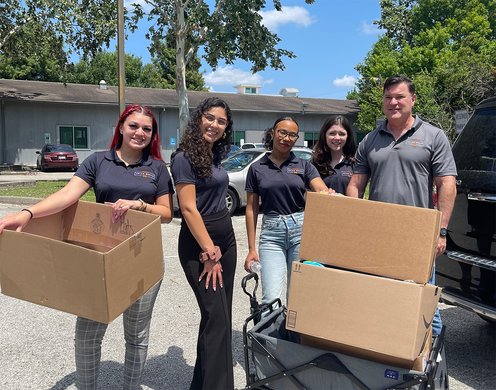

Houston Freeway Crash Liability Questions
After a multi-vehicle collision, legal guidance from Car Accident Lawyer in Houston may help assess whether responsibility extends beyond the driver who made contact. The review may include lane changes, merging behavior, passenger status, vehicle ownership, and whether a driver was performing work-related duties. Car Accident Lawyer in Houston can also examine possible agency, negligent entrustment, or commercial-carrier issues when more than one person or business had a role in putting a vehicle on the road.
Insurance handling can create separate issues from the underlying driving dispute. A carrier may request a recorded statement, propose a quick release, or take a position on responsibility before all participants have explained their roles, so communications should be read carefully and no agreement should be signed without understanding its terms. Car Accident Lawyer in Houston can review policy provisions such as liability limits, exclusions, additional insured provisions, and uninsured or underinsured motorist coverage. When a company vehicle is involved, Car Accident Lawyer in Houston may also evaluate whether an employer, contractor, or fleet operator has an independent contractual role in responding to the claim.
Passengers and drivers in the same event can have different legal positions, and a driver's responsibility does not automatically resolve a passenger's potential claim. Medical treatment, vehicle ownership, employment records, and proposed settlement documents should be considered together rather than viewed in isolation. Before accepting an offer or making a definitive statement, Car Accident Lawyer in Houston can explain how the available policies, parties, and documented losses interact, including what consequences a release may carry.

Intersection Collision Fault Analysis
A roadway crash can turn on details that are not obvious from the damage alone. Signal phases, turn arrows, stop-line positions, lane markings, and each vehicle's direction of travel can clarify which movement had priority. Seeking guidance from Car Accident Lawyer in Houston may help organize those details into a timeline, and Car Accident Lawyer in Houston can assess whether the reported sequence fits the traffic controls and site geometry.
The governing rule may differ depending on whether a vehicle entered during a green or yellow interval, turned across opposing traffic, or proceeded from a controlled stop. A citation can be relevant without deciding every civil question, because traffic enforcement and private claims may involve different standards and records. Car Accident Lawyer in Houston may help explain how those standards interact, while Car Accident Lawyer in Houston can outline the questions that should be addressed before an insurer or opposing party is given a final account.
A careful account should separate what a person observed from what they later inferred, especially when timing, speed, or visibility is disputed. Prompt medical attention and orderly communication with insurers can also reduce confusion while injuries and property damage are being evaluated. Speaking with Car Accident Lawyer in Houston can help identify missing details, assess available options, and plan a response that is supported by the circumstances.
Commercial Vehicle Injury Representation
When an injury follows a collision involving a business-operated vehicle, early decisions can affect the strength of a potential claim. Car Accident Lawyer in Houston can help identify the appropriate parties, clarify insurance requirements, and explain how deadlines may apply. A careful review may cover the vehicle's assigned use, the driver's training, dispatch records, and policies governing rest, inspection, and safe operation. Car Accident Lawyer in Houston may also help preserve relevant employment and maintenance information before routine record-retention practices remove it.
Injured people should prioritize appropriate medical care and describe symptoms accurately at each visit, even when discomfort develops gradually. Car Accident Lawyer in Houston can help connect treatment records, work restrictions, and projected care to the harm being claimed. Financial effects may include missed income, reduced earning capacity, rehabilitation expenses, and non-economic losses such as pain or diminished daily function. Car Accident Lawyer in Houston can evaluate settlement proposals with attention to future needs rather than focusing only on bills already received.
A well-prepared claim depends on consistent communication and a clear record of decisions. Keep copies of correspondence, invoices, wage information, medical records, and forms submitted to insurers, while avoiding speculation or casual statements about fault. Car Accident Lawyer in Houston can explain the next procedural steps, address communications with opposing parties, and help present the claim in a measured, evidence-based manner. Prompt, informed action can make it easier to protect available options while recovery continues.
Attorney Brian White Personal Injury Lawyers
Attorney Brian White Personal Injury Lawyers
Attorney Brian White Personal Injury Lawyers 3120 Southwest Fwy Suite 300, Houston, TX 77098
(713) 364-1466